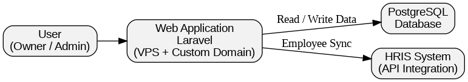

Clipzo Manager
Internal business management system for barbershop operations

Project Overview
Clipzo Manager is an internal web-based management system developed as a freelance project for a local barbershop in Bandung. The client needed a centralized system to manage daily operations, including financial records, service catalogs, and overall business performance monitoring.
The primary goal of this project was to deliver a reliable and usable solution in a short timeframe while ensuring that the system could support real operational workflows. Until today, the system is still actively used in production.
Business Problem
Before Clipzo Manager, most operational activities were handled manually or through scattered tools. This caused difficulties in tracking revenue, monitoring employee performance, and maintaining consistent operational data.
The barbershop also required integration with an existing HRIS system to manage employee and capster data, making system interoperability a key requirement.
Challenges
- Delivering a complete and usable system under tight deadlines.
- Translating non-technical business requirements into clear technical specifications.
- Designing a system that could integrate with an external HRIS platform.
- Ensuring the application was stable, secure, and ready for real operational use.
Technical Approach

I designed and implemented the system as a full-stack web application using Laravel and PostgreSQL. Laravel was chosen for its robustness, ecosystem maturity, and ability to deliver features quickly without sacrificing maintainability.
The system architecture was designed around modular services, allowing financial data, catalog management, and employee records to be handled independently while remaining connected through a unified backend.
For deployment, the application was manually deployed to a VPS environment with a custom domain. This involved server configuration, database setup, environment hardening, and ongoing maintenance to ensure system reliability.
Results & Impact
The final system enabled the barbershop to monitor revenue streams, manage service catalogs, and track employee-related data from a single platform. Operational visibility improved significantly, allowing the business owner to make more informed decisions.
This project also marked an important milestone in my development as a software engineer, as I independently handled the full project lifecycle, from requirement gathering to deployment and post-launch support.
Lessons Learned
- Clear communication with non-technical stakeholders is critical to project success.
- Fast delivery does not have to compromise system structure and maintainability.
- Building software that is actually used in production requires a strong focus on reliability.
- Understanding business context is just as important as technical implementation.